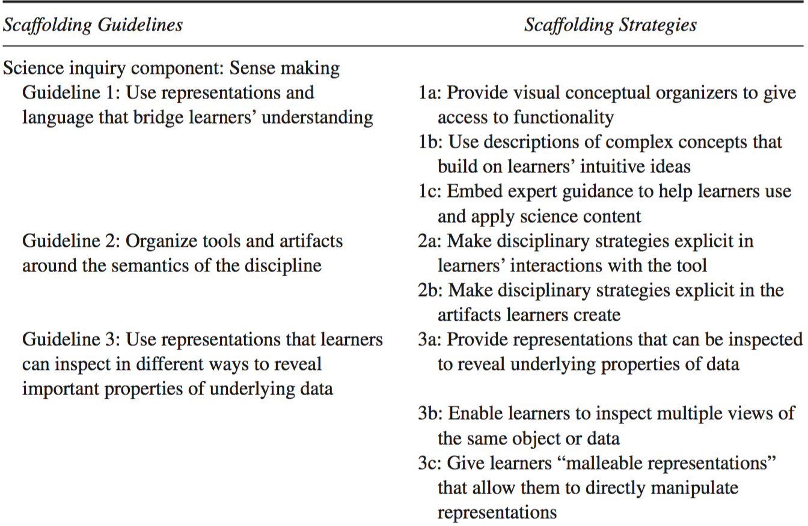
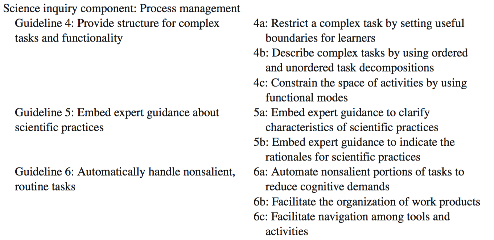
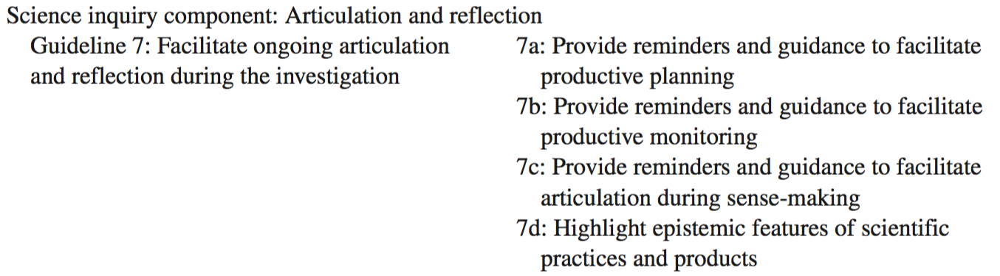
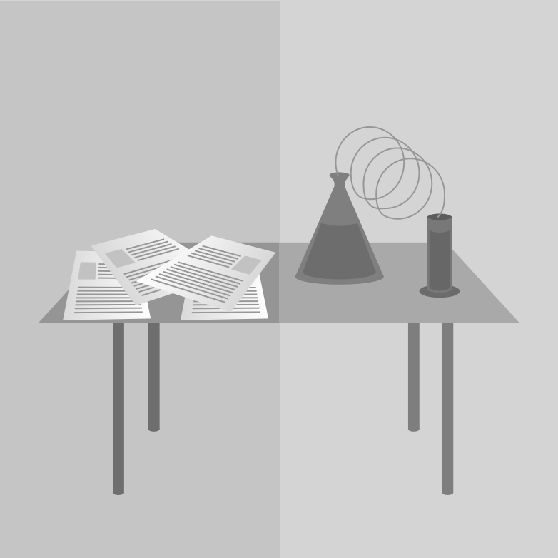
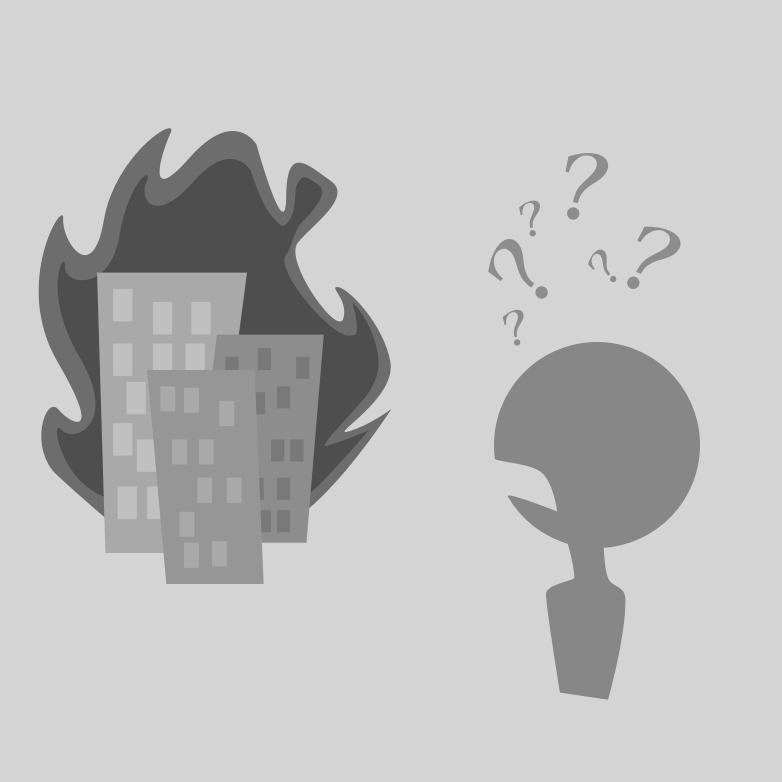

Scaffolding design framework (SDF) is a comprehensive synthesis of various models of science inquiry practice and general learning theory [16]. Among the models condensed into SDF are the LfU and SKIF frameworks. The purpose of SDF is as a theoretical framework for inquiry that can be examined empirically to highlight what approaches to scaffolding work best for learners across contexts. SDF is broken down into three high-level elements: task model, obstacles, and scaffolding guidelines [16]. Task model describes types of inquiry contrived from existing literature, obstacles are what learners encounter while using a type of task model, and the third element is a collection of scaffolding guidelines that describe how task model types can be modified to help learners pass obstacles.
SDF represents an amalgamation of various inquiry methods and theories of learning. As each of the constituent parts address specific concerns and design challenges, an assortment of them provides a robust framework to base future learning design on. SDF creates common ground for the other frameworks and allows learning contexts to be compared and studied. SDF by its nature, is also an attempt to extract the underlying workings from other theories and their models of learning. The high-level insight proposed by SDF can help guide new theory and development across multiple domains.
Sense making describes the very nature of how basic actions are done by students practicing scientific inquiry: forming hypotheses, designing and carrying out experiments, analyzing data, and understanding what was done. The purpose is to make sense with the rigor of a scientist—a systematic and operationalized activity embodying the rules and regulations of the respective field (e.g., only varying one aspect at a time, testing hypothesis with experimental cases, etc.). Through the design of the activity, students learn from the actions and sequences they engage with: manipulating representations, elucidating patterns, and identifying objects and problems.
Obstacles
- Learners need help when connecting their existing knowledge to that of the formal discipline [7]
- Students do not have domain specific knowledge to indentify the most relevant information
- Learning the expert strategies to guide sense making are not typically salient [3, 4, 12]
Guidlines
 Table Source: [16]
Basic operations lead to learning through the activity, but understanding what needs to be done in order to reach success or completion is the other half of the challenge [8, 13, 15, 17]. This part of the framework leans towards being highly aware of actions in ill-structured learning environments. As most scientific inquiry lacks prescribed ways of navigating problems and solutions [6], students need to be constantly monitoring and understanding their efforts and performance for success and meaningful learning to occur.
Obstacles
- Students need to learn and comprehend the procedures that need to be performed in order to reach achievement
- Students must come to terms with how to organize their inquiries—the relevant sequence of coordinated action
- Students must position their efforts to achieve the correct result (i.e., avoid getting distracted by less important tasks). Experts often have obtained a high level of automation with such low-order activities, but when unaddressed they can interfere with student learning
Guidelines
 Table Source: [16]The purpose of the previous two task models were to provide a foundation from which a student could then direct their understandings into a meaningful conclusion—or argument. In this final task, a student reviews, reflects, evaluates, synthesizes and critiques their thinking in order to articulate the learned knowledge. Many of the other educational frameworks also leverage articulation and reflection: making thinking visible and life-long learning from SKIF, and knowledge refinement and realization of knowledge gaps in LfU. By reflecting on the process and sense making tasks, students can improve their understandings and inquiry skills, detect weaknesses and strengths, assess goal achievement, and publicly display their knowledge [16].
Obstacles
- Students do not typically reflect productively or realize that they should articulate their knowledge [5, 10, 11, 19, 20, 25]
- Students may use self-harming strategies (e.g., quick outcomes to save own time; [22]) and may not fully identify and reconcile discrepancies in their knowledge [2, 26]
- Learners do not explore all of their options, at times succumbing to logistical details [21], and can fail to understand how to effectively measure their progress [9, 14, 23, 27]
- Students lack the existing knowledge to successfully package up the critical scientific products: supporting claims with evidence, warranting arguments [24], refining and expanding explanations [1], and composing coherent claims and handling multiple reasonings [18]
Guidelines
 Table Source: [16]Learning for a student should be matched to what using and applying that knowledge actually means. So learning chemistry only on paper without even knowing how a chemist does their profession does not help a student learn how to do chemistry—they are learning how solve decontextualized problems. By using chemistry equipment and doing science as it is done professionally grounds the learning in a meaninful context.
When learning in such a setting, the experience may be very dynamic and a student may struggle to understand how to effectively apply their knowledge, or fail to develop a robust foundation. An example of this failure can be demonstrated by Tropico 5, a city building simulator where you build farms, design the ruling government, and deal with disasters and public issues as your city grows. However, when learning the system and trying to understand what is happening, your town can be burning down right in front of your eyes with no clue what's causing it. Students need ways to refine how they interact with a system, and see how their choices influence outcomes while they learn.
Understanding the process is one thing, but to improve that process is what learning is all about. How does the novice become an expert? With the right structure, students can transition to a professional status as their actions and learnings approach those of the experts their learning is based on.
References
1. Chi, M., & Bassok, M. (1989). Learning from examples via self-explanations. In L. B. Resnick (Ed.), Knowing, learning, and instruction: Essays in honor of Robert Glaser (pp. 251–282).
2. Cohen, E. G. (1994). Restructuring the classroom: Conditions for productive small groups. Review of Educational Research, 64, 1–35.
3. Collins, A., & Brown, J. S. (1988). The computer as a tool for learning through reflection. In H. Mandl & A. M. Lesgold (Eds.), Learning issues for intelligent tutoring systems (pp. 1–18). Chicago: Springer-Verlag.
4. Collins, A., Brown, J. S., & Newman, S. E. (1989a). Cognitive apprenticeship: Teaching the craft of reading, writing, and mathematics. In L. B. Resnick (Ed.), Cognition and instruction: Issues and agendas (pp. 453–494).
5. Davis, E. A., & Linn, M. C. (2000). Scaffolding students’ knowledge integration: Prompts for reflection in KIE. International Journal of Science Education, 22, 819–837.
6. Davis, M., Hawley, P., McMullan, B., & Spilka, G. (1997). Design as a catalyst for learning. Alexandria, VA: Association for Supervision and Curriculum Development.
7. Edelson, D. C., Gordin, D., & Pea, R. (1999). Addressing the challenges of inquiry-based learning through technology and curriculum design. The Journal of the Learning Sciences, 8, 391–450.
8. Krajcik, J., Blumenfeld, P., Marx, R., Bass, K. M., Fredericks, J., & Soloway, E. (1998). Middle school students’ initial attempts at inquiry in project-based science classrooms. The Journal of the Learning Sciences, 7, 313–350.
9. Lan, W. (1996). The effects of self-monitoring on students’ course performance, use of learning strategies, attitude, self-judgment ability, and knowledge representation. Journal of Experimental Education, 64, 101–115.
10. Linn, M. C., & Songer, N. B. (1991). Teaching thermodynamics to middle school students: What are appropriate cognitive demands? Journal of Research in Science Teaching, 28, 885–918.
11. Loh, B., Reiser, B. J., Radinsky, J., Edelson, D. C., Gomez, L. M., & Marshall, S. (2001). Developing reflective inquiry practices: A case study of software, the teacher, and students. In K. Crowley, C. D. Schunn, & T. Okada (Eds.), Designing for science: Implications from everyday, classroom, and professional settings (pp. 279–323).
12. Merrill, D. C., Reiser, B. J., Ranney, M., & Trafton, J. G. (1992). Effective tutoring techniques: A comparison of human tutors and intelligent tutoring systems. The Journal of the Learning Sciences, 2, 277–306.
13. National Research Council. (1996). National science education standards. Washington, DC: Author.
14. Palincsar, A. S., & Brown, A. L. (1984). Reciprocal teaching of comprehension-fostering and comprehension-monitoring activities. Cognition and Instruction, 1, 117–175.
15. Quintana, C., Eng, J., Carra, A., Wu, H., & Soloway, E. (1999). Symphony: A case study in extending learner-centered design through process-space analysis. Proceedings of CHI 99 Conference on Human Factors in Computing Systems (pp. 473–480).
16. Quintana, C., Reiser, B. J., Davis, E. A., Krajcik, J., Fretz, E., Duncan, R. G., & Soloway, E. (2004). A scaffolding design framework for software to support science inquiry. The journal of the learning sciences, 13(3), 337-386.
17. Reiser, B. J., Tabak, I., Sandoval, W. A., Smith, B. K., Steinmuller, F., & Leone, A. J. (2001). BGuILE: Strategic and conceptual scaffolds for scientific inquiry in biology classrooms.
18. Sandoval, W. A. (2003). Students’ understanding of causal explanation and natural selection in a technology-supported inquiry curriculum. The Journal of the Learning Sciences, 12, 5–51.
19. Scardamalia, M., & Bereiter, C. (1991). Higher levels of agency for children in knowledge building: A challenge for the design of new knowledge media. The Journal of the Learning Sciences, 1, 37–68.
20. Schauble, L., Glaser, R., Duschl, R., Schulze, S., & John, J. (1995). Students’ understanding of the objectives and procedures of experimentation in the science classroom. The Journal of the Learning Sciences, 4, 131–166.
21. Schauble, L., Glaser, R., Raghavan, K., & Reiner, M. (1991). Causal models and experimentation strategies in scientific reasoning. The Journal of the Learning Sciences, 1, 201–238.
22. Schauble, L., Klopfer, L., & Raghavan, K. (1991). Students’ transition from an engineering model to a science model of experimentation. Journal of Research in Science Teaching, 28, 859–882.
23. Tien, L., Rickey, D., & Stacy, A. (1999). The MORE cycle: Guiding students’ thinking in the laboratory. Journal of College Science Teaching, 18(5), 318–324.
24. Toulmin, S. E. (1964). The uses of argument. Cambridge, England: Cambridge University Press. (Original work published 1958)
25. van Zee, E., & Minstrell, J. (1997). Reflective discourse: Developing shared understandings in a physics classroom. International Journal of Science Education, 19, 209–228.
26. Webb, N. M. (1983). Predicting learning from student interaction: Defining the interaction variables. Educational Psychologist, 18, 33–41.
27. White, B., & Frederiksen, J. (1998). Inquiry, modeling, and metacognition: Making science accessible to all students. Cognition and Instruction, 16, 3–118.
Designed and Developed by Nicholas Persa